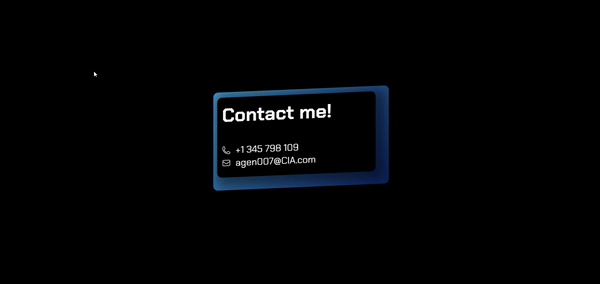

I'm talking about this kind of effect 👇, I just didn't know what's it called ¯\_(ツ)_/¯, so I made up a name.

Let's imagine that the element you wanna do this effect to has a id of "card". Btw I'm not going to dive into styling, however you give the element enough depth to see the effect, like the one you saw right up there.
#card {
transform: rotateX(var(--rotateX)) rotateY(var(--rotateY));
-webkit-transform: rotateX(var(--rotateX)) rotateY(var(--rotateY));
perspective: 5000px;
-webkit-perspective: 5000px;
position: relative;
transform-style: preserve-3d;
-webkit-transform-style: preserve-3d;
}
and the code below is the magic
const card = document.querySelector('#card');
document.addEventListener('mousemove', (e) => {
rotateElement(e, card);
});
document.addEventListener('mouseleave', () => {
card.style.transition = 'all .5s ease-in-out';
card.style.setProperty('--rotateX', '0deg');
card.style.setProperty('--rotateY', '0deg');
setTimeout(() => {
card.style.transition = 'none';
}, 500);
});
function rotateElement (event, element) {
const x = event.clientX;
const y = event.clientY;
// middle of apge
const middleX = window.innerWidth / 2;
const middleY = window.innerHeight / 2;
// offset from middle
const offsetX = ((x - middleX) / middleX) * 20;
const offsetY = ((y - middleY) / middleY) * 20;
element.style.setProperty('--rotateX', -1 * offsetY + 'deg');
element.style.setProperty('--rotateY', offsetX + 'deg');
}
The above does the job but the element follows the mouse all around the page, what if you only want it to follow the mouse when it enters the element itself? Follow along.
const card = document.querySelector('#card');
let hasGoneOVerIt = false;
card.addEventListener('mouseenter', () => {
setTimeout(() => {
card.style.transition = 'none';
}, 300);
});
card.addEventListener('mousemove', (e) => {
rotateElement(e, card);
});
card.addEventListener('mouseleave', (e) => {
card.style.transition = 'transform 0.2s ease-out';
card.style.setProperty('--rotateX', '0deg');
card.style.setProperty('--rotateY', '0deg');
});
function rotateElement(event, element) {
const rect = element.getBoundingClientRect();
const x = event.clientX - rect.left;
const y = event.clientY - rect.top;
// middle of card
const middleX = rect.width / 2;
const middleY = rect.height / 2;
// offset from middle
const offsetX = ((x - middleX) / middleX) * 20;
const offsetY = ((y - middleY) / middleY) * 20;
element.style.setProperty('--rotateX', -1 * offsetY + 'deg');
element.style.setProperty('--rotateY', offsetX + 'deg');
}
The above makes the element to follow the mouse movement only when the mouse is on the element.
Highly recommend you to watch this https://youtu.be/Z-3tPXf9a7M?si=AFAP2DCIXOdWRR94, if you wanna get into it much deeper and also find a css-only version of it.